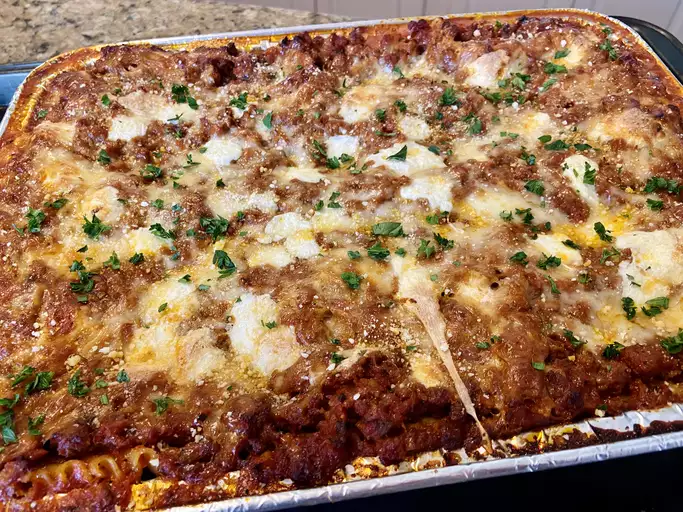

Lasagna

Ingredients
Lasagna Noodles
: Pre-cooked or oven-ready lasagna noodles
Meat Sauce
Cheese Mixture
Additional Cheese
Preparation Steps
Preheat your oven to 375°F (190°C).
Brown the ground meat with onions and garlic; drain excess fat.
Stir in crushed tomatoes, tomato paste, basil, oregano, salt, and pepper; simmer for about 30 minutes.
In a bowl, mix ricotta cheese, grated Parmesan, egg, and parsley.
Spread a layer of meat sauce in the bottom of a baking dish.
Place a layer of lasagna noodles over the sauce.
Spread a layer of the cheese mixture over the noodles.
Add a layer of shredded mozzarella cheese.
Repeat the layering process until all ingredients are used, ending with meat sauce.
Top with a final layer of mozzarella and Parmesan cheese.
Cover with foil and bake for 25 minutes.
Remove foil and bake for an additional 25 minutes, or until cheese is bubbly and browned.
Let it cool for 15 minutes before serving.